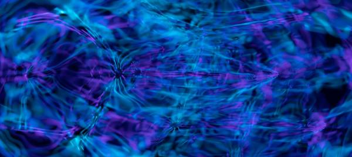
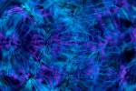
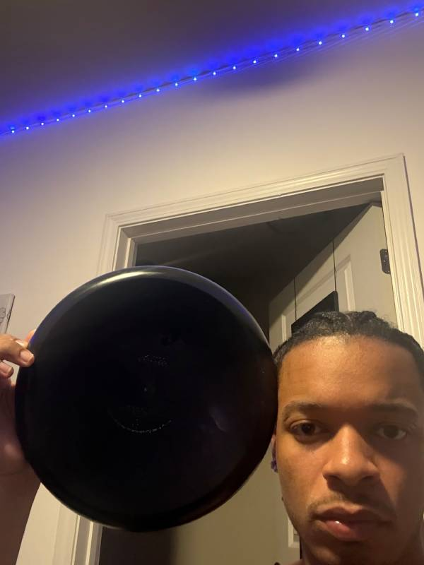
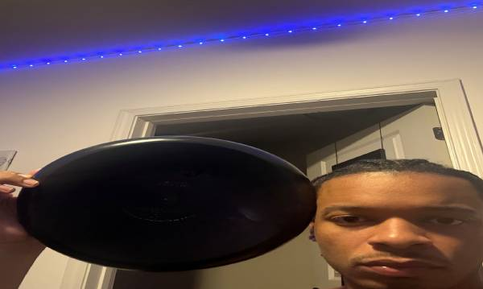

This page is a hands-on lab for how images work on the web. It uses one very large photo from Pexels and one photo I took myself to compare file formats (JPG, GIF and PNG), greyscale and black and white versions, and file sizes. It also shows the difference between resizing with CSS and resizing in an editor, and what happens to an image when its proportions are changed or it is enlarged too much.
Demonstrating Image Formats and Resizing with a Light Painting Photo from Pexels.com
I picked this photo because the swirling blue and purple light trails are full of fine detail, which makes quality loss easy to see. It was taken by Merlin Lightpainting on Pexels, a light painting artist who creates original in-camera photography using light painting. The original is a JPEG that is 6000 × 4000 pixels and 713 KB (about 0.71 MB). The version shown here was resized to 600 × 400.
Light painting by Merlin Lightpainting, resized to 600 × 400 for the web.
The full 6000 × 4000 original displayed at 600px wide with CSS (10%). It looks small, but the browser still downloads all 713 KB.
Proper Reduction of Image with Editor
Resized in an editor to 600 × 400 with proportions locked. It looks sharp and loads much faster.
Improper Image Proportions with CSS

600 × 268: width kept, height reduced 33%. Squashed flat.600 × 180: height reduced another 33%. Even flatter.402 × 400: height kept, width reduced 33%. Squeezed narrow.269 × 400: width reduced another 33%. Even narrower.
Improper Enlarging with CSS
The 600 × 400 version displayed at 300px wide. It stays crisp.

The 150 × 100 version (25%) stretched to the same 300px. It looks blurry because the browser has to invent pixels.
Demonstrating Proportions with My Own Photo of a Frisbee Next to My Head
I took this photo with my iPhone 16 Pro. I chose a frisbee because it is perfectly round, so any stretching shows up immediately next to my face. The original is a portrait JPEG that is 2316 × 3088 pixels and 949 KB (about 0.95 MB). The version shown here was resized to 600 × 800.

Frisbee next to my head, resized to 600 × 800 with the portrait proportions kept.
The full 2316 × 3088 original displayed at 463px wide with CSS (20%). The proportions are right, but the browser still downloads all 949 KB.
Proper Reduction of Image with Editor
Resized in an editor to 600 × 800 with proportions locked. The frisbee is still round.
Improper Image Proportions with CSS
600 × 536: width kept, height reduced 33%. The frisbee turns into an oval.

600 × 359: height reduced another 33%. A very wide oval.402 × 800: height kept, width reduced 33%. Tall and skinny.269 × 800: width reduced another 33%. Even skinnier.
Improper Enlarging with CSS
The 600 × 800 version displayed at 300px wide. It stays crisp.The 150 × 200 version (25%) stretched to the same 300px. It looks blurry and blocky.